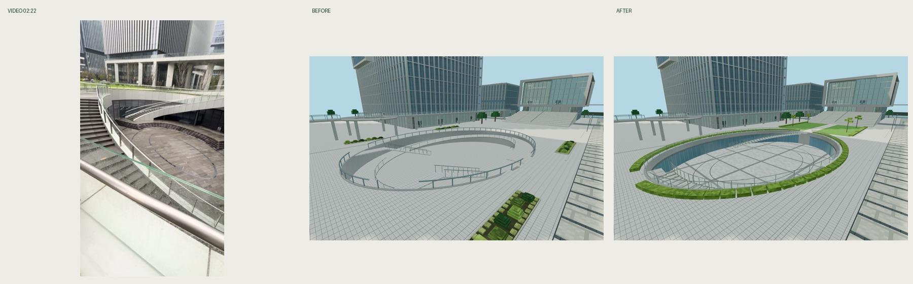
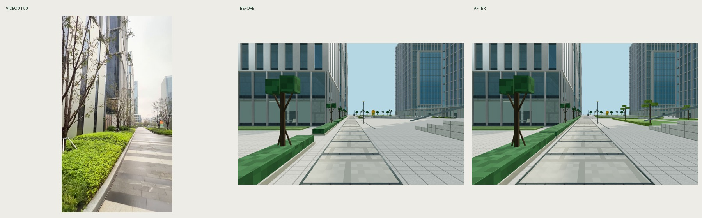
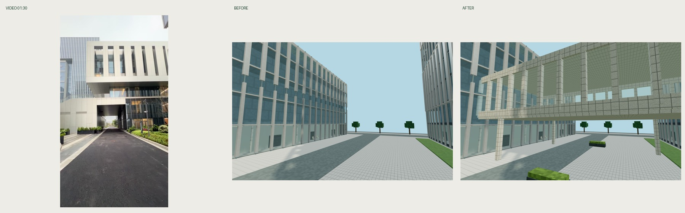
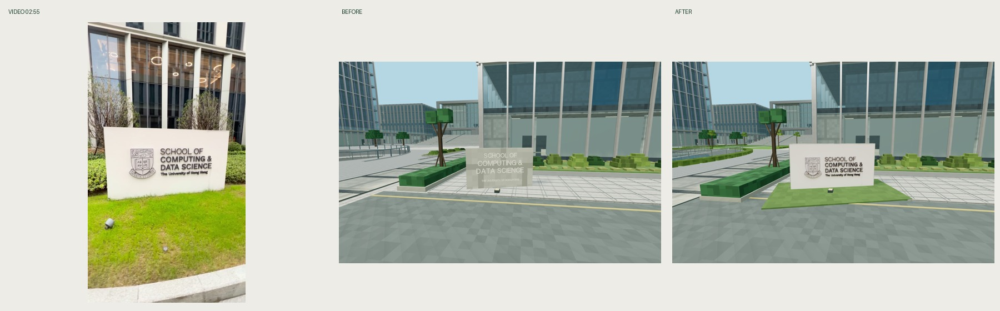
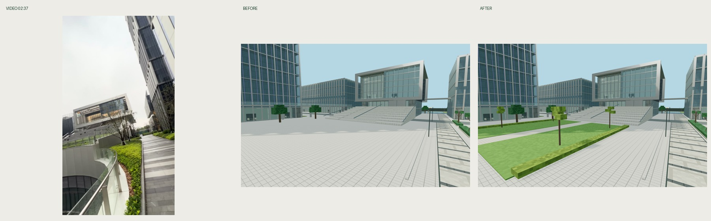
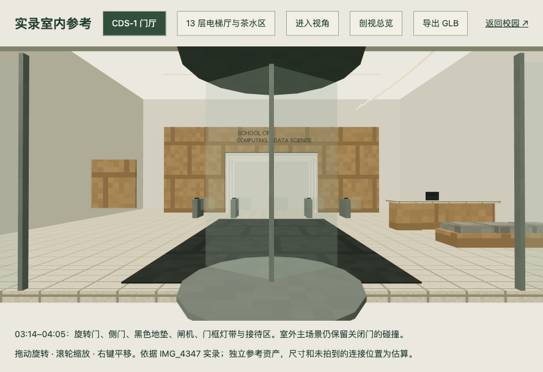
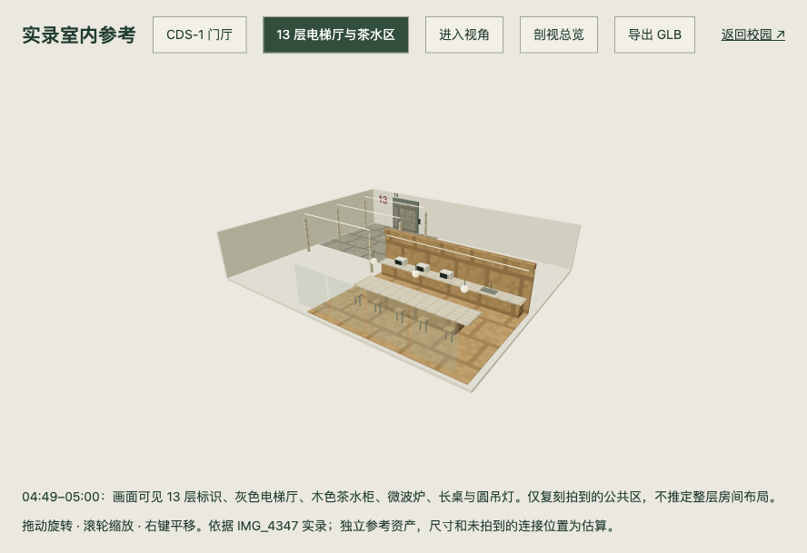
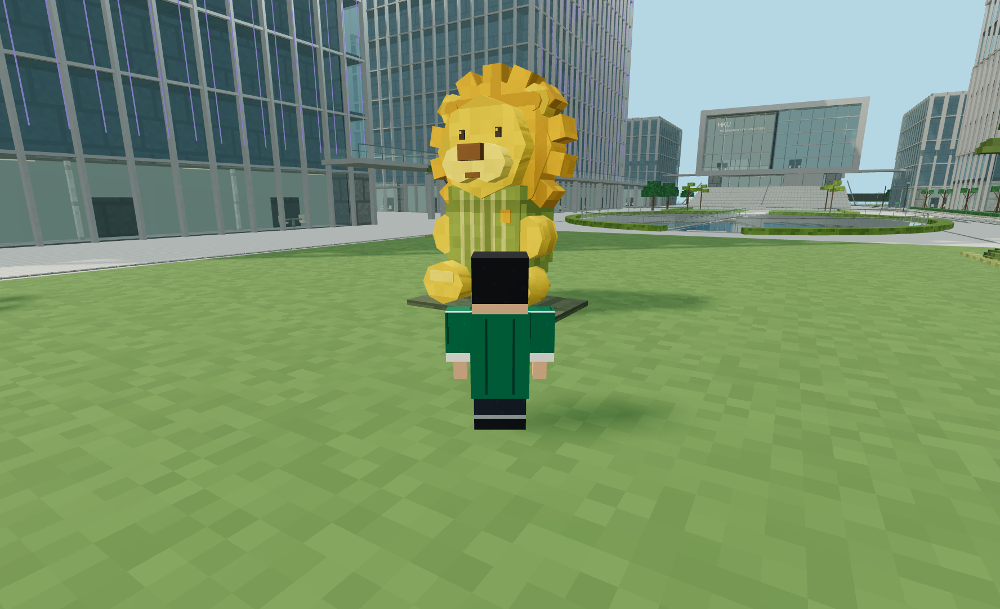
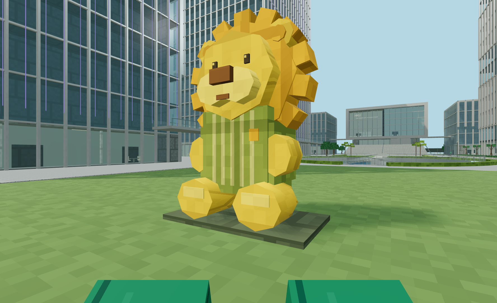

← 返回校园 · 查看室内参考模型按 11 月 14 日实录更新校园
依据 IMG_4347.MOV 的关键帧与本地语音转写修正。下面每组右侧两张模型图使用相同相机；实景机位来自手持视频，未宣称透视完全重合。
室外可走 · 新室内独立预览 · 全部可编辑中央弧形下沉楼梯
两条弧形台阶、玻璃栏杆、下层围护与环形铺装；精确起止角和深度暂定。

实录 02:22 · 原始抽帧 · 修改前 · 修改后
连续绿篱与步道
路边低篱延长，减少零散大灌木，保留小树及步道净宽。

实录 01:50 · 原始抽帧 · 修改前 · 修改后
教学楼—5 号楼连接
架空连接体、白色构架、透明围护和下方通道；构件尺度估算。

实录 01:30 · 原始抽帧 · 修改前 · 修改后
学院石牌
牌面透视裁切后重新贴图，补草地。位置和石牌尺寸仍暂定。

实录 02:55 · 原始抽帧 · 修改前 · 修改后
庭院至中央楼的绿化
绿地、低篱、疏冠树与中央通道衔接到原有台阶。

实录 02:37 · 原始抽帧 · 修改前 · 修改后
实际通行录像
约 35 秒，第三人称沿弧形楼梯下到庭院并原路返回。外部本机脚本仅提交动作意图，由游戏正常更新循环执行；录像开始前设置测试起点，途中没有改坐标或推进物理帧。保留游戏声音，本轮没有重新评价音色。
实际运动记录 · 连接体下方真实按键测试 · 两侧楼梯物理测试 · 完整回归与构建日志 · GLB 检查日志
新增室内参考资产
门厅和 13 层公共区独立查看；主校园仍只开放室外，门、电梯未开放通行。未拍到的连接距离、房间布局不当作实测。

门厅：旋转门、侧门、地垫、闸机、接待区与门框灯带。实景 03:35
13 层：电梯厅与茶水区要素。实景 04:58门厅 GLB · 13F GLB · 更新校园 GLB
狮子与人物尺度

第三人称同框
正常眼睛高度尺度与证据边界
狮子本体由上一轮暂定 5.8 m 改为 4.8 m，依据视频中“可能四五米”的目测；支撑 0.12 m 不变，总高 4.92 m。所有本体轴同比缩放。此估计不替代实测，不改变已校准的楼栋水平位置。
楼梯曲线已确认；28 级、90°弧段、4.2 m 深度，以及连接体净高、室内平面、绿化精确位置仍是集中参数化的估算。原视频前一分钟的自动转写出现无意义重复，已排除。
逐项时间戳与依据 · 实现与启动说明 · 抽帧拼图 1 · 抽帧拼图 2